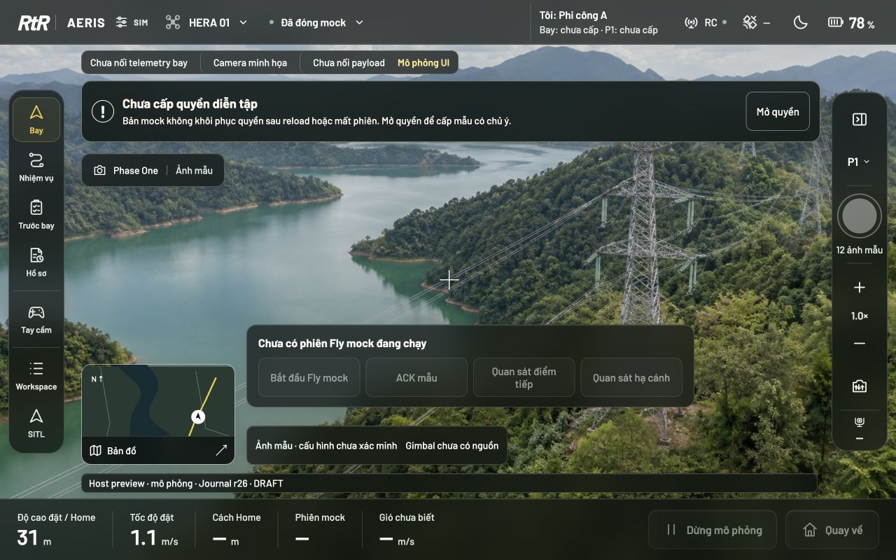
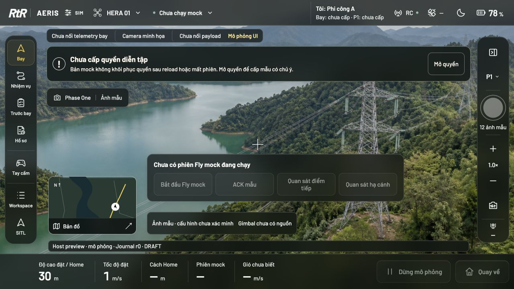
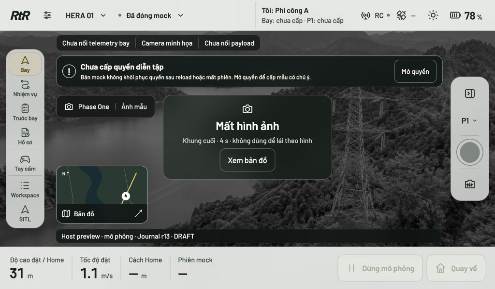
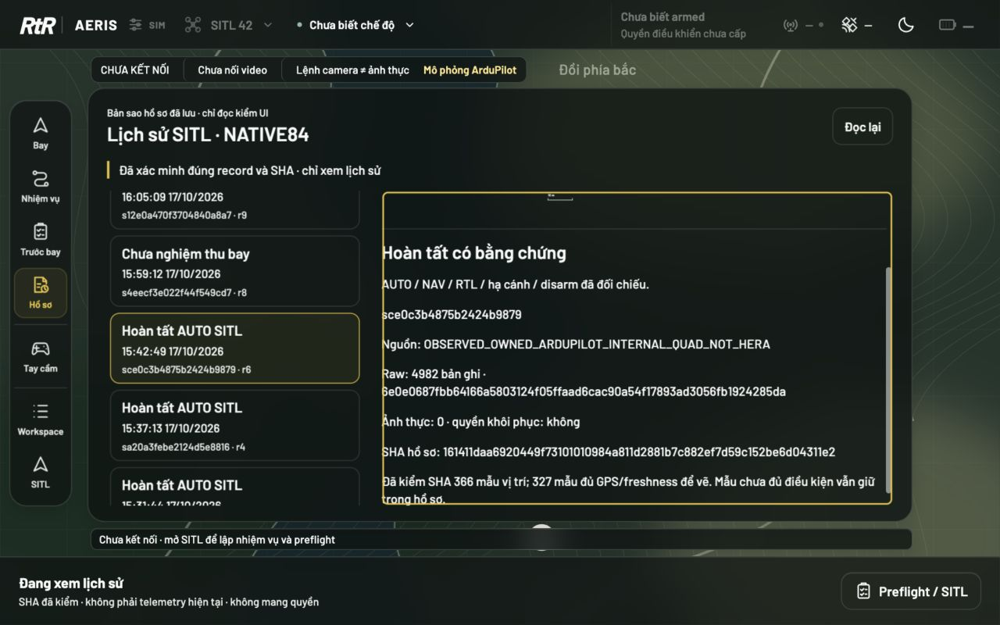
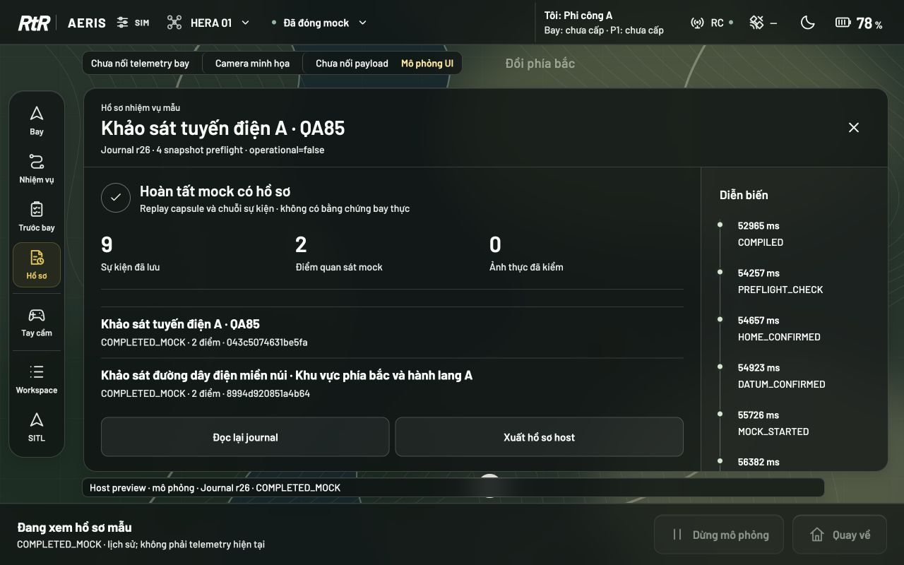

RtRAERIS · COCKPIT85 · Hồ sơ QA306 trạng thái · 0 lỗi còn mở trong phạm vi nghiệm thu browser

Lề logo và thông số cùng token. Ảnh camera chỉ minh họa, không phải video thực.COCKPIT85 — Căn lề và rà soát giao diện
READY trong phạm vi browser UI; kiểm Android được tách riêng. Đây là overlay cô lập từ NATIVE84, chưa thay APK đã nghiệm thu. Không build/ký APK, không khởi động SITL/emulator hay sửa source/candidate/canonical SOT/ENDURE.
Cụm thông số bắt đầu cùng đường căn trái với logo RtR: lệch 76 px trước sửa → 0 CSS px sau sửa, ở 1280×800, 1366×768, 1920×1080 và 1024×600, ngày/đêm. Dùng chung token lề thay cho padding riêng bị các breakpoint ghi đè. Giữ Barlow tiếng Việt, kính mờ, trắng/đen và vàng phụ.
Các phát hiện đã xử lý
| ID | Mức | Phát hiện và sửa | Bằng chứng |
|---|
| QA85-01 | P1 | Footer lệch logo; một token căn lề cho cả hai, sai số cho phép ≤1 CSS px | before-fly-1280x720.json; release-main-* |
| QA85-02 | P1 | Panel/nút dưới lấn dòng trạng thái; dành riêng một làn trạng thái cho mọi work surface | release-main-*; accept-panel-* |
| QA85-03 | P1 | Màn thấp và tên dài làm vùng cuộn quá nhỏ; gọn header/footer panel, hai dòng tóm tắt, tên đầy đủ trong editor/title | compact-long-title-r7; release-main-1024-* |
| QA85-04 | P1 | Hàng review co lại làm mã nhiệm vụ tràn viền; giữ chiều cao nội dung, cuộn danh sách | history-fixed-1280-night.png; release-history-* |
| QA85-05 | P1 | Khi mất hình, cụm mock che nút Xem bản đồ; dành vị trí cảnh báo và tạm ẩn cụm trang trí/mock xung đột, giữ dữ liệu/trạng thái | accept-alert-1024-*-video (lỗi cũ); release-alert-*-video; video-recovery.json |
| QA85-06 | P2 | Chữ quyền operator tràn header compact; tăng vùng chứa và cho phép ngắt dòng có kiểm soát | compact-long-title-r7-text; release-main-*-text |
| QA85-07 | P2 | Mini-map và cụm thao tác thấp chồng nhau trên màn rộng; dùng chung cột và khoảng cách | release-main-1920-*-fly-text |
| QA85-08 | P2 | Engineering panel dùng màu/biên riêng, nội dung cuộn thiếu ràng buộc; chuyển về token vật liệu/ink, header/tabs cố định | accept-panel-* |
| QA85-09 | P2 | Panel và sheet có thể cùng mở; phối hợp đóng/mở, Escape và trả focus đúng nút mở | coordination.json |
| QA85-10 | P2 | Nút đóng dùng ký tự × khác hệ icon; dùng SVG stroke thống nhất, hit target riêng | accept-panel-*; controls-regression.json |
| QA85-11 | P2 | Logo nhỏ hơn vùng chạm 48px, rail dài trên màn thấp; chuẩn hóa vùng chạm và nhịp icon/label | release-main-1024-* |
| QA85-12 | P2 | CTA panel lệch chiều rộng và disabled còn giống hành động chính; chuẩn hóa full-width và trạng thái disabled | release-main-*; journey captures |
Nghiệm thu
- 306 trạng thái được chọn trong verification-ui.json: 32 màn hình chính, 144 trạng thái sheet đầu/cuối cuộn, 32 tab workspace/SITL, 8 xác nhận quay về, 56 cảnh báo, 24 review, 6 nền kiểm thị giác, 3 hành trình mock và 1 trạng thái SITL chưa kết nối. 1.127 kiểm chứng tổng hợp đạt. Đây là số kiểm, không phải 1.127 lỗi hay phần trăm trưởng thành sản phẩm.
- 4 màn hình chính: khảo sát, trước bay, Fly mock, review. 9 lối mở sheet: quyền, aircraft, link/scenario, SIM lab, pin/dự phòng, tay cầm, payload, camera settings, camera metadata. Menu flight mode trong native hiện bị khóa theo nguồn; không mở giả để lấy điểm QA.
- 31 kiểm controls/icon/theme, 46 kiểm mô hình freshness/identity/history và 16 kiểm hành trình + Java journal đạt. 34 tệp JS trong đợt syntax ban đầu đạt; các script nghiệm thu bổ sung đã chạy thành công.
- Hai ca kiểm âm thực tế: thêm 8px vào lề bị phát hiện; cho panel rộng 180vw bị phát hiện. Không tính hai ca lỗi chủ ý là PASS UI.
- Hành trình trên bản cuối: lưu → compile → cấp quyền mẫu → đọc profile → xác nhận Home/cao độ/tuyến → Fly mock → ACK không tăng điểm → quan sát 2 điểm → hạ cánh mock → review → reload. Hai hồ sơ mock giữ được qua journal, 4 snapshot preflight, không lưu/khôi phục quyền; ảnh thực 0. Xem workspace-final.json.
- Đọc lại 5 hồ sơ SITL NATIVE84 từ bản sao đúng SHA, kiểm semantic riêng; review hoàn tất, phiên ngắt và hồ sơ legacy giữ đúng phân loại. Không phải chuyến bay SITL mới.
- Đã kiểm theme sun/moon, reduced material blur 8px, focus/Escape và nút Xem bản đồ thực sự phục hồi màn map. Log browser cuối không có error/warn. Một phép đo host rAF trước đó: p95 9,1ms, max 9,3ms/120 khoảng; chỉ nhịp callback, không dùng làm chứng cứ GPU, render latency hoặc Hera.
- 50.870 tệp được bảo vệ khớp SHA trước/sau, không khẳng định đường dẫn hiện diện liên tục ngoài các lần kiểm. Dung lượng còn khoảng 55 GiB; sàn 20 GiB được giữ. Không tải SDK, không tạo project/build/cache trong tmp, không chạy Docker ở tác vụ này; không có scratch phải xóa.
Phạm vi và giới hạn
REQ85-01…05: 5/5 đạt trong phạm vi browser đã định nghĩa. Đánh giá do một agent chuyển vai build/QA, không phải review độc lập hay chứng nhận DJI/Apple. Phép đo hit-test/khung chữ + ảnh kiểm thị giác giúp bắt hồi quy; không chứng minh mọi pixel ở mọi thiết bị hoặc mọi trạng thái chưa biết đều hoàn hảo.
NOT_CHECKED ở vòng này: APK85/Android emulator, SAF/IME/cửa sổ hệ điều hành, HeraHub/HID/touch thật, video thật, hiệu suất GPU/compositor, đổi OS reduced-motion, portrait/kích thước dưới 1024px, bay SITL mới. Ma trận sheet/panel/return đã chạy trước sửa cuối chỉ tác động trạng thái mất video; diff chính xác được kiểm và ma trận main/alert/history cùng thao tác phục hồi được chạy lại sau sửa. Các ảnh và kết quả lỗi trước sửa giữ nguyên trong evidence.
Bàn giao
Preview http://127.0.0.1:8848/mock.html. Báo cáo máy: evidence/cockpit85/verification-ui.json. Source pin cuối: evidence/cockpit85/ui-admission-pins02.json. Toàn vẹn cũ: preservation-final.json. Source overlay: native/cockpit85. APK được nghiệm thu gần nhất vẫn là NATIVE84 development10.
Bước tiếp: đưa đúng overlay đã kiểm sang một APK development cô lập, kiểm lại Android ở đúng density/insets, bàn phím, SAF, lifecycle và hành trình trước khi thay bản đang dùng. Không suy ra nghiệm thu native từ kết quả browser.
Đối chứng và kiểm cảnh báo

Trước sửa: cụm thông số lệch logo 76 CSS px.
Sau sửa: nút Xem bản đồ không bị cụm mock che khi mất hình, màn thấp 1024×600.
Hồ sơ SITL gốc đọc qua bản sao đúng SHA, không suy ra trạng thái live.
Hồ sơ mock sau reload; không tự khôi phục quyền.